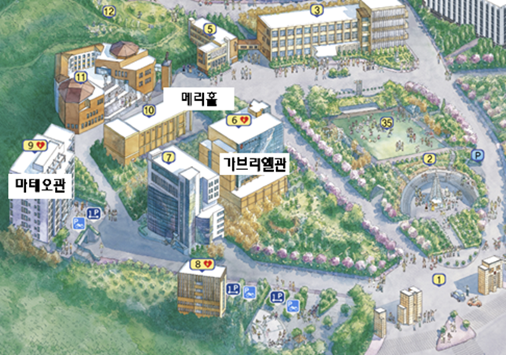

행사장 배치도

행사장 상세 안내
10
메리홀
Mary Hall
진행 프로그램
- 개회식
- 토크 콘서트
- 기조강연
9
마테오관 9층
Matteo Hall 9F
진행 프로그램
- 대학 전시 부스
- 기업 전시 부스
- 대학원생 포스터 전시
6
가브리엘관 1층
Gabriel Hall 1F
진행 프로그램
- 선배와의 대화
- 협력기업 토론
- 산학협력 프로젝트 발표
- 우수 성과 발표
6
가브리엘관 B1층
Gabriel Hall B1F
진행 프로그램
- 협력기업 체험 전시
찾아오시는 길
노선안내
버스 이용 시
서울시내 연결 교통편
간선버스
110A, 110B, 163, 604, 740, 753번
지선버스
921, 5714, 6712, 7016, 7613번
마을버스
마포07, 마포11, 마포12, 마포14번
인천공항에서 오시는 길
공항버스
1층 입국층 5B 또는 12A 승차장에서 6002번을 타고 신촌 현대백화점 앞에서 하차(신촌 현대백화점까지 약 80분 소요, 도로사정에 따라 달라질 수 있음)
지하철 이용 시
서울시내 연결 교통편
2호선 신촌역
6번출구에서 정문까지 도보로 8분
6호선 대흥역
1번출구에서 남문까지 도보로 5분
경의중앙선 서강대역
1번출구에서 정문까지 도보로 3분
그 외 역, 터미널, 공항에서 오시는 길
서울역(경부선)에서 오시는 길
1호선 탑승 후 시청역에서 2호선으로 환승하여 신촌역에서 하차(환승 포함하여 신촌역까지 약 30분 소요)
용산역(호남선)에서 오시는 길
1호선 탑승 후 시청역에서 2호선으로 환승하여 신촌역에서 하차(환승 포함하여 신촌역까지 약 35분 소요)
청량리역(경의중앙선)에서 오시는 길
1호선 탑승 후 시청역에서 2호선으로 환승하여 신촌역에서 하차(환승 포함하여 신촌역까지 약 40분 소요)
강남고속터미널에서 오시는 길
3호선 탑승 후 을지로3가역에서 2호선으로 환승하여 신촌역에서 하차(환승 포함하여 신촌역까지 약 40분 소요)
동서울터미널에서 오시는 길
강변역에서 2호선 탑승 후 신촌역에서 하차(환승 포함하여 신촌역까지 약 40분 소요)
남부터미널에서 오시는 길
3호선 탑승 후 을지로3가역에서 2호선으로 환승하여 신촌역에서 하차(환승 포함하여 신촌역까지 약 50분 소요)
김포공항에서 오시는 길
공항철도 탑승 후 홍대입구역에서 2호선으로 환승하여 신촌역에서 하차(환승 포함하여 신촌역까지 약 35분 소요)
인천공항에서 오시는 길
공항철도 탑승 후 홍대입구역에서 2호선으로 환승하여 신촌역에서 하차(환승 포함하여 신촌역까지 약 70분 소요)